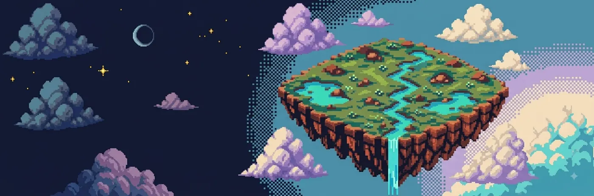
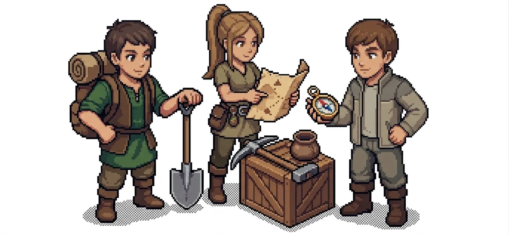
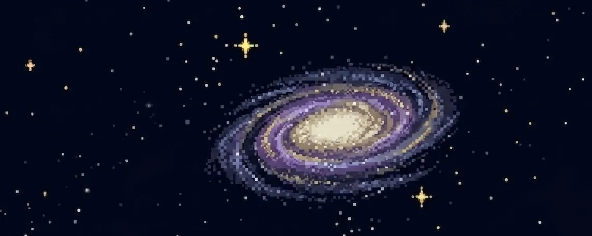
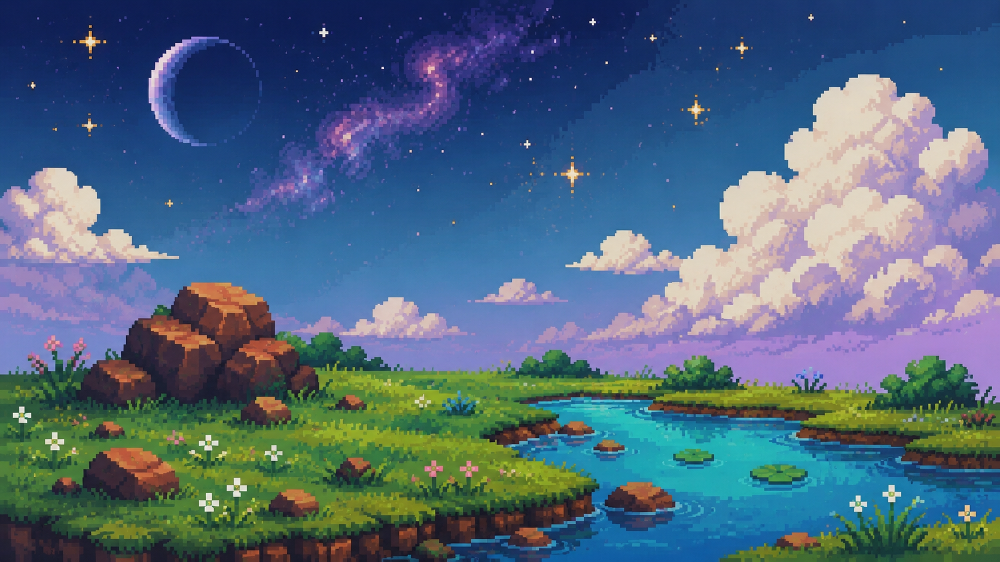
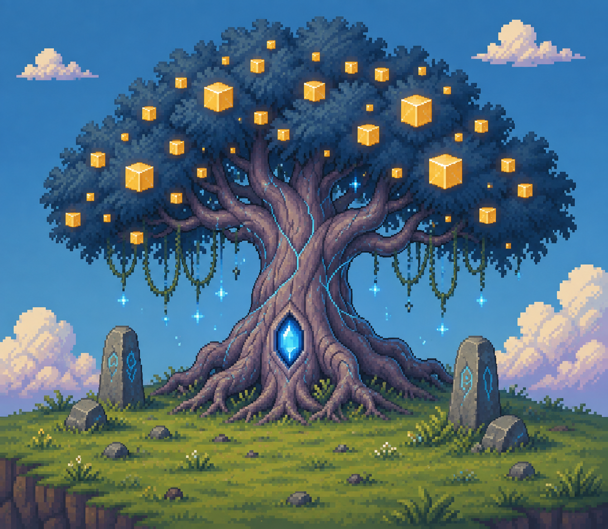

Hast du manchmal auch verrückte Träume? Zum Beispiel diesen:
In einem fantastischen Paralleluniversum entdeckst du den seltsamen,
bewohnbaren Inselplaneten Novera. Du bist der erste Mensch, der diese
Welt betritt und machst sie zu deinem neuen Zuhause. Was brauchst du,
um hier gut leben zu können?

Gespeicherte Welten
Aufgabe A
Was brauchst du, um auf Novera gut leben zu können?
Gestalte deine erste Welt. Wähle Farben, gib ihnen eigene Bedeutungen
und zeige damit, was für dich zu einem guten Leben gehört. Du kannst
auch die bereits vorhandenen Farben benennen oder verändern.
⚠️ Vergiss nicht, deine Welt zu speichern.
Was ist dir für ein gutes Leben besonders wichtig? Erkläre, wie
deine Welt das zeigt.
Deine Antwort wird automatisch in diesem Browser gespeichert.
Aufgabe B
Zwei weitere Personen erreichen deine Welt. Sie wollen auch ein
gutes Leben führen. Was veränderst du?
Bearbeite zuerst Aufgabe A vollständig.

Gestalte die Welt so um, dass du und zwei weitere Personen dort gut
leben können.
⚠️ Vergiss nicht, deine Welt zu speichern.
Was hast du in der zweiten Welt verändert? Und warum?
Deine Antwort wird automatisch in diesem Browser gespeichert.
Aufgabe C
Schliesse dich mit jemandem zusammen. Einigt euch auf eine gemeinsame
Welt, in der ihr beide und die insgesamt vier weiteren Personen gut
leben können.
Bearbeite zuerst Aufgabe B vollständig.

Besprecht, was euch für ein gutes Leben wichtig ist. Einigt euch auf
eine gemeinsame Welt, in der ihr beide und vier weitere Personen gut
leben können. Beide gestalten diese gemeinsame Welt in ihrer eigenen
Simulation gleich.
⚠️ Vergiss nicht, deine Welt zu speichern.
Was war euch beiden wichtig? Wo wart ihr unterschiedlicher Meinung?
Worauf musstet ihr euch einigen?
Hat sich deine Vorstellung von einem guten Leben durch die Aufgaben verändert?
Begründe deine Antwort.
Eure Antworten werden automatisch in diesem Browser gespeichert.
Deine Mission
Herausfinden, wie Novera tickt
Du arbeitest mit einer bisherigen oder vorbereiteten Novera-Welt weiter. Finde heraus, was Menschen brauchen und wünschen, welche Voraussetzungen dafür nötig sind und wie heutige Entscheidungen spätere Möglichkeiten verändern.

Deine gespeicherten Welten
Diese Welten hast du in der ersten Phase gespeichert. Du kannst sie hier nochmals ansehen.
Aufgabe A
Vier bis sechs Bereiche auswählen
Wähle zuerst eine Welt aus.
Wähle vier bis sechs verschiedene Bereiche aus deiner Welt aus, die du genauer anschauen möchtest.
Aufgabe B
Genauer beschreiben und entscheiden
Wähle in Aufgabe A zuerst vier bis sechs Bereiche aus.
Beschreibe bei jedem ausgewählten Bereich genauer, was du damit meinst. Entscheide danach für dich persönlich: Brauche ich das ganz sicher für ein gutes Leben oder wünsche ich es mir eher zusätzlich?
Damit Menschen etwas bekommen oder tun können, braucht es Voraussetzungen. Manche sind natürlich, zum Beispiel Wasser, Boden, Rohstoffe oder Energie. Andere entstehen durch das Zusammenleben, zum Beispiel Wissen, Arbeit, Verkehrswege, Regeln oder Zusammenarbeit. Oft braucht es beides gleichzeitig.
Aufgabe C
Zuerst Aufgabe B fertig bearbeiten.
Der magische Baum
Auf Novera braucht es keine natürlichen oder gesellschaftlichen Voraussetzungen um Dinge für ein gutes Leben zu ermöglichen. Hier wächst ein magischer Baum. Seine Früchte können dir geben, was du brauchst. Für alles was du dir erfüllst, werden zwei Früchte geerntet. Nach jeder Runde wachsen über Nacht neue Früchte. Wie viele es genau sind, siehst du erst nach der Nacht.

Wähle aus, was du in dieser Runde bekommen möchtest. Beim Klick auf «Runde abschliessen» werden die dafür nötigen Früchte vom Baum genommen.
Am Baum: 14/14Runde: 1
Aufgabe D
Was hast du beobachtet?
Führe zuerst mindestens drei Runden in Aufgabe C durch.
Denke über deine Runden nach.
Gehe dabei auf diese Fragen ein:
Was ist passiert, wenn du viele Früchte genutzt hast?
Was ist passiert, wenn du weniger Früchte genutzt hast?
Wann konntest du dir auch zusätzliche Wünsche erfüllen – und wann nicht?
Was konntest du beim Nachwachsen der Früchte nicht vorhersagen?
Vergleiche deine Beobachtungen mit dieser Erkenntnis:
Nutzung heute beeinflusst Möglichkeiten morgen. Wie viele Früchte nachwachsen, ist begrenzt und nicht vollständig vorhersehbar. Auch wenn du nicht genau weisst, was später passiert, kannst du überlegen, was später noch möglich sein soll.
Bis jetzt hast du selbst entschieden, was du ganz sicher für ein gutes Leben brauchst und was du dir eher zusätzlich wünschst. Dabei ging es um deine persönliche Sicht.
Nun schauen wir darauf, was Menschen allgemein brauchen, damit sie gut leben können. Dafür unterscheiden wir zwischen Needs und Desires.
Needs sind Dinge und Bedingungen, die für ein gutes Leben grundlegend sind. Dazu gehören zum Beispiel Nahrung, Wasser, Gesundheit, Bildung, Wohnen, soziale Beziehungen, Energie oder die Möglichkeit mitzubestimmen.
Desires sind zusätzliche Wünsche. Sie können uns sehr wichtig sein, sind aber nicht dasselbe wie grundlegende Needs.
Oft steckt hinter einem Desire ein Need: Ein bestimmtes Smartphone ist kein Need. Mit anderen Menschen in Kontakt sein zu können, kann dagegen einer sein.
Was wir uns wünschen, wird auch von Werbung, sozialen Medien, Trends und unserem Umfeld beeinflusst. Dadurch kann sich ein Desire manchmal so wichtig anfühlen wie ein Need.
Desires sind nicht falsch oder schlecht. Die Unterscheidung wird besonders wichtig, wenn nicht alles gleichzeitig möglich ist.
Aufgabe E
Jetzt arbeitet ihr zu zweit
Lies zuerst beide Erklärungen zu Needs und Desires und bestätige sie.
Setzt euch zu zweit zusammen. Ihr seid Person A und Person B. Jede Person bekommt zwei vorgegebene Needs und zwei Desires. Besprecht zuerst, wie ihr die Früchte ernten wollt, und schreibt eure Abmachung hier auf. Entscheidet danach gemeinsam, wofür ihr in jeder Runde Früchte erntet. Für jede Sache braucht es zwei Früchte. Die Früchte reichen nicht immer für alles.
Denkt zum Beispiel darüber nach: Was ist euch beim Ernten wichtig? Was soll Person A bekommen, was Person B? Wann erntet ihr für Needs, wann für Desires?
Am Baum: 14/14Runde: 1
Person A
Person B
Aufgabe F
Was hat sich verändert?
Führt zuerst mindestens drei gemeinsame Runden in Aufgabe E durch.
Denkt über eure gemeinsamen Runden nach.
Geht dabei auf diese Fragen ein:
War eure Verteilung für Person A und Person B gerecht? Warum?
Hat eure Abmachung funktioniert? Würdet ihr sie für weitere Runden beibehalten oder verändern? Warum?
Platzhalter für die TitelgrafikBlick von Novera auf die weit entfernte Erde
Deine Mission
Herausfinden, was Novera mit der Erde zu tun hat
Untersuche nun in einem Mystery die Frage: Was hat Novera mit der Erde zu tun? Bei einem Mystery arbeitest du mit verschiedenen Hinweisen. Du ordnest Karten, verbindest wichtige Zusammenhänge und entwickelst daraus eine eigene Erklärung. Es gibt nicht nur eine richtige Lösung.
Aufgabe A
Mystery: Was hat Novera mit der Erde zu tun?
Arbeitet in Gruppen von 2–4 Personen. Ordnet die Karten auf der Arbeitsfläche und verbindet wichtige Zusammenhänge. Baut daraus eine Erklärung zur Mystery-Frage. Ihr müsst nicht alle Karten verwenden oder alles miteinander verbinden. Einige gute Verbindungen reichen.
ⓘ Hinweis
Arbeitsfläche: frei verschieben; mit Mausrad oder zwei Fingern zoomen.
Zuordnung wählen: Die Kartenfarbe zeigt die Kategorie. Die Legende erklärt die Farben.
Zwei Punkte antippen: Karten verbinden. Linie antippen: beschriften oder löschen.
Eigene Karte
Needs auf der Erde
Auch auf der Erde brauchen Menschen Dinge, ohne die ein gutes Leben kaum möglich ist – zum Beispiel Nahrung, sauberes Wasser, Schutz oder medizinische Hilfe. Auf Novera habt ihr solche Dinge als Needs kennengelernt.
Desires auf der Erde
Auch auf der Erde wünschen sich Menschen Dinge, die über grundlegende Bedürfnisse hinausgehen. Solche Desires können sehr verschieden sein und sich durch Werbung, Trends oder das Umfeld verändern.
Ein gutes Leben braucht mehr als Dinge
Auf der Erde hängt ein gutes Leben nicht nur von Besitz ab. Gesundheit, Beziehungen, Sicherheit, Bildung und Mitbestimmung spielen ebenfalls eine wichtige Rolle.
Ein Need kann verschieden erfüllt werden
Auf der Erde kann ein Need auf verschiedene Arten erfüllt werden. Wer mobil sein möchte, braucht zum Beispiel nicht zwingend ein eigenes Auto – auch Bus, Zug oder Fahrrad können Mobilität ermöglichen.
Was sich erneuert, braucht Zeit
Auf der Erde können sich manche Vorräte und Lebensräume erneuern. Das braucht Zeit. Zum Beispiel wächst ein abgeholzter Wald nicht in einer Nacht wieder nach.
Nutzung kann schneller sein als Erholung
Menschen können auf der Erde mehr nutzen, als in derselben Zeit wieder entsteht. Zum Beispiel können Fischbestände schrumpfen, wenn dauerhaft mehr Fische gefangen werden, als Nachwuchs entsteht.
Auch die Erde hat Grenzen
Auch auf der Erde kann nicht jede Belastung beliebig wachsen. Forschende untersuchen unter dem Begriff «planetare Grenzen», wie stark wichtige Bereiche wie Klima, Wasser, Land und Artenvielfalt verändert werden können, bevor Risiken deutlich steigen.
Grenzen der Erde hängen zusammen
Auf der Erde beeinflussen sich verschiedene Bereiche gegenseitig. Steigende Temperaturen können zum Beispiel Arten unter Druck setzen; mehr CO₂ verändert zusätzlich die Ozeane. Probleme bleiben deshalb selten auf einen Bereich beschränkt.
Kipppunkte können Veränderungen verstärken
Manche Veränderungen auf der Erde können ab einer bestimmten Schwelle sehr schwer rückgängig zu machen sein. Solche Schwellen nennt man Kipppunkte. Danach kann eine weitere kleine Veränderung grosse Folgen auslösen.
Folgen treffen Menschen unterschiedlich
Auf der Erde sind Menschen nicht gleich stark von Hitze, Überschwemmungen oder Ernteausfällen betroffen. Geld, Wohnort, Gesundheit, Infrastruktur und politische Unterstützung beeinflussen, wie gut Menschen sich schützen können.
Nicht alles ist eine persönliche Entscheidung
Auf der Erde hängen Möglichkeiten auch von Strassen, öffentlichem Verkehr, Energieversorgung, Preisen, Gesetzen und Unternehmen ab. Deshalb entstehen Veränderungen nicht nur durch einzelne Konsumentscheidungen.
Wer nutzt wie viel?
Menschen und Länder nutzen auf der Erde sehr unterschiedlich viel Energie und Rohstoffe und verursachen unterschiedlich viele Emissionen. Gleichzeitig sind die Folgen von Umweltveränderungen ungleich verteilt.
Wer trägt wie viel Verantwortung?
Bei der Frage nach Gerechtigkeit spielt nicht nur eine Rolle, wer betroffen ist. Auch wer besonders viel zu einer Belastung beigetragen hat und wer Möglichkeiten zur Veränderung besitzt, kann wichtig sein.
Die Erde liefert wichtige Lebensgrundlagen
Menschen auf der Erde sind auf Wasser, fruchtbare Böden, Nahrung, ein stabiles Klima und funktionierende Lebensräume angewiesen. Werden diese Grundlagen stark verändert, wirkt sich das auch auf Gesundheit und Versorgung aus.
Gesellschaft kann Möglichkeiten verändern
Auf der Erde können Politik und Gesellschaft Rahmenbedingungen verändern – zum Beispiel durch öffentlichen Verkehr, Energieversorgung, Regeln oder neue Technik. Dadurch ändern sich auch die Möglichkeiten einzelner Menschen.
Novera zeigt nur einen Teil der Wirklichkeit
Der magische Baum auf Novera zeigt eine einfache Idee: Nutzung heute kann Möglichkeiten morgen beeinflussen. Auf der Erde sind die Zusammenhänge aber viel komplexer, weil viele Prozesse gleichzeitig wirken und miteinander verbunden sind.
Was hat Novera mit einem guten Leben auf der Erde zu tun? Schreibt eure wichtigsten Zusammenhänge in wenigen Sätzen auf. Eure Antwort muss nicht alles erklären.
Ihr müsst nicht auf alles eine Antwort haben. Welche Fragen sind bei euch entstanden? Was habt ihr euch beim Arbeiten gefragt?
ⓘ Hinweis
Wie ihr eure Lösung und eure offenen Fragen in der Klasse weiterverwendet, besprecht ihr mit eurer Lehrperson.
Aufgabe B
Novera – ein Modell
Beende zuerst Aufgabe A.
Die Fantasiewelt Novera und der magische Baum sind Modelle. Ein Modell zeigt einen Ausschnitt der Wirklichkeit vereinfacht. So lassen sich bestimmte Zusammenhänge leichter erkennen.
Modelle haben aber Grenzen: Sie lassen vieles weg. Der Baum zeigt zum Beispiel, dass heutige Nutzung spätere Möglichkeiten beeinflussen kann. Er zeigt aber nicht, wie die vielen Vorgänge auf der Erde genau ablaufen.
Darum ist wichtig zu fragen: Was kann das Modell zeigen – und was nicht?
Entscheide bei jeder Aussage: Kann Novera das zeigen oder nicht? Prüfe danach deine Antworten.
Aussage
Kann gezeigt werden
Kann nicht gezeigt werden
Der Baum zeigt, dass heutige Nutzung spätere Möglichkeiten beeinflussen kann.
Der Baum zeigt genau, wie schnell sich Wälder, Fischbestände oder Böden auf der Erde erholen.
Novera kann helfen, über Needs und Desires nachzudenken.
Novera zeigt genau, was jeder Mensch für ein gutes Leben braucht.
Novera kann zeigen, dass nicht alles gleichzeitig erfüllt werden kann.
Der Baum zeigt alle wichtigen Zusammenhänge des Erdsystems.
Novera kann helfen, über Verteilung und Gerechtigkeit zu sprechen.
Die Fruchtzahl zeigt, wie viele Rohstoffe es auf der Erde wirklich gibt.
Novera kann helfen, Folgen von Entscheidungen über mehrere Runden zu beobachten.
Aus Novera kann man direkt ablesen, welche Lösung für die Erde richtig ist.
Ein Modell kann etwas verständlicher machen, obwohl es die Wirklichkeit vereinfacht.
Ein Modell ist nur dann nützlich, wenn es die Wirklichkeit vollständig abbildet.
Möchtest du noch etwas aufschreiben, das dir zu den Möglichkeiten oder Grenzen von Novera aufgefallen ist?
Bevor du deine Welt speicherst …
Prüfe kurz, ob etwas Wichtiges fehlt.
Du kannst weitergestalten oder trotzdem speichern.
Hinweise und Impressum
Novera ist eine digitale Lernumgebung, in der Lernende
zunächst eigene Vorstellungen eines guten Lebens gestalten und vergleichen.
In der anschliessenden Erarbeitungsphase untersuchen sie Needs und Desires,
begrenzte Möglichkeiten, Erneuerung, Unsicherheit, Zukunftsüberlegungen sowie gemeinsame
Regeln und Verteilungsentscheidungen.
Didaktischer Zweck
Die Lernumgebung verbindet offene Gestaltung, Reflexion und eine vereinfachte
Simulation. Die erste Phase macht unterschiedliche Bedürfnisse, Wünsche und
Vorstellungen sichtbar. Die zweite Phase lenkt den Blick auf Zusammenhänge
zwischen heutiger Nutzung, zukünftigen Möglichkeiten und dem Umgang mit
begrenzten und nicht vollständig vorhersehbaren Bedingungen. In der
Partnerphase werden zusätzlich Aushandlung, Verteilung und gemeinsame Regeln
thematisiert.
Hinweise zur Verwendung
Novera gibt keine «richtige» Welt und kein bestimmtes nachhaltiges Verhalten
vor. Begriffe, Fruchtzuordnungen und Erneuerungsraten sind Teil einer bewusst
vereinfachten Fantasiewelt. Die Ergebnisse sollten deshalb nicht als reale
Nachhaltigkeitsbewertung verstanden werden. Für den Unterricht ist die
anschliessende Diskussion wichtig: Welche Zusammenhänge zeigt Novera,
welche vereinfacht es und was lässt sich nicht direkt auf die reale Welt
übertragen?
Technische Hinweise
Arbeitsstände werden grundsätzlich im lokalen Speicher des verwendeten
Browsers abgelegt. Über «Arbeitsstand herunterladen» kann zusätzlich eine
HTML-Datei als Sicherung gespeichert werden. Diese Datei lässt sich später
wieder in Novera laden und kann geöffnet, gedruckt oder über den
Browser-Druckdialog als PDF gesichert werden.
Die Anwendung wurde mit Unterstützung von ChatGPT entwickelt.
Programmierung, automatische Begriffserkennung und Darstellungen können Fehler
oder unerwartetes Verhalten enthalten.
Impressum und Kontakt
Erstellt und verantwortlich für diese Website:
Ivo Jost
Hauptstrasse 82
3854 Oberried
Schweiz
Novera verwendet keine Benutzerkonten, Kontaktformulare oder
Analysewerkzeuge. Eingegebene Begriffe, Antworten, Arbeitsstände und
gespeicherte Welten werden im lokalen Speicher des verwendeten Browsers
abgelegt und von der Anwendung nicht an den Verantwortlichen übermittelt.
Auch die Arbeitsstandsdatei wird direkt im Browser erstellt.
Beim Aufruf der Website kann der Hosting-Anbieter GitHub technisch
notwendige Verbindungsdaten verarbeiten, beispielsweise IP-Adresse,
Zeitpunkt, aufgerufene Datei und Browserangaben. Es gelten die
Datenschutzbestimmungen des Hosting-Anbieters.
Hinweise und Impressum
Novera ist eine digitale Lernumgebung, in der Lernende zunächst eigene Vorstellungen eines guten Lebens gestalten und vergleichen. In der anschliessenden Erarbeitungsphase untersuchen sie Needs und Desires, begrenzte Möglichkeiten, Erneuerung, Unsicherheit, Zukunftsüberlegungen sowie gemeinsame Regeln und Verteilungsentscheidungen.
Didaktischer Zweck
Die Lernumgebung verbindet offene Gestaltung, Reflexion und eine vereinfachte Simulation. Die erste Phase macht unterschiedliche Bedürfnisse, Wünsche und Vorstellungen sichtbar. Die zweite Phase lenkt den Blick auf Zusammenhänge zwischen heutiger Nutzung, zukünftigen Möglichkeiten und dem Umgang mit begrenzten und nicht vollständig vorhersehbaren Bedingungen. In der Partnerphase werden zusätzlich Aushandlung, Verteilung und gemeinsame Regeln thematisiert.
Hinweise zur Verwendung
Novera gibt keine «richtige» Welt und kein bestimmtes nachhaltiges Verhalten vor. Begriffe, Fruchtzuordnungen und Erneuerungsraten sind Teil einer bewusst vereinfachten Fantasiewelt. Die Ergebnisse sollten deshalb nicht als reale Nachhaltigkeitsbewertung verstanden werden. Für den Unterricht ist die anschliessende Diskussion wichtig: Welche Zusammenhänge zeigt Novera, welche vereinfacht es und was lässt sich nicht direkt auf die reale Welt übertragen?
Technische Hinweise
Arbeitsstände werden grundsätzlich im lokalen Speicher des verwendeten Browsers abgelegt. Über «Arbeitsstand herunterladen» kann zusätzlich eine HTML-Datei als Sicherung gespeichert werden. Diese Datei lässt sich später wieder in Novera laden und kann geöffnet, gedruckt oder über den Browser-Druckdialog als PDF gesichert werden.
Die Anwendung wurde mit Unterstützung von ChatGPT entwickelt. Programmierung, automatische Begriffserkennung und Darstellungen können Fehler oder unerwartetes Verhalten enthalten.
Impressum und Kontakt
Erstellt und verantwortlich für diese Website:
Ivo Jost
Hauptstrasse 82
3854 Oberried
Schweiz
Kontakt über das GitHub-Repository von Novera.
Datenschutz
Novera verwendet keine Benutzerkonten, Kontaktformulare oder Analysewerkzeuge. Eingegebene Begriffe, Antworten, Arbeitsstände und gespeicherte Welten werden im lokalen Speicher des verwendeten Browsers abgelegt und von der Anwendung nicht an den Verantwortlichen übermittelt. Auch die Arbeitsstandsdatei wird direkt im Browser erstellt.
Beim Aufruf der Website kann der Hosting-Anbieter GitHub technisch notwendige Verbindungsdaten verarbeiten, beispielsweise IP-Adresse, Zeitpunkt, aufgerufene Datei und Browserangaben. Es gelten die Datenschutzbestimmungen des Hosting-Anbieters.